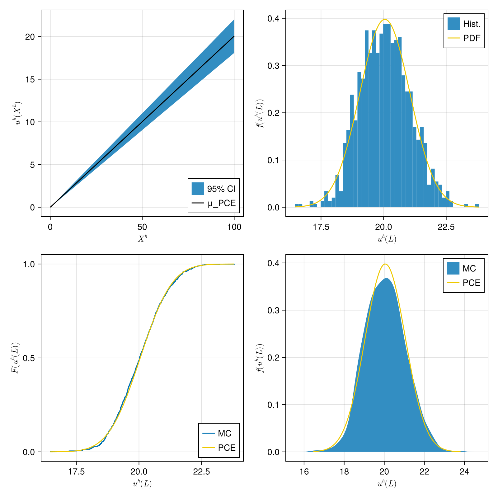

Copyright (c) 2025-2026 Jan Philipp Thiele SPDX-License-Identifier: MIT
101 : Sampling of a 1D Bar under tension
This setup is based on the example described in section 2.3[Narouie23].
It compares classical Monte Carlo sampling, with $n_{MC} = 1000$, to a surrogate model based on polynomial chaos expansion (PCE), with $n_{PCE} = 50$.
Instead of having a 'hard-wired' FEM package solve the underlying problem, we use UMBridge to link to a specific implementation. This black box should provide a model named Bar1D.FEM with an evaluate function solving the actual problem, i.e. a 1D bar of length $L=100$ under longitudinal load $F=800$:
\[\begin{aligned} EA u'' & = 0\\ u(0) &= 0\\ u'(L) &= \frac{F}{EA} \end{aligned}\]
with a cross sectional area $A=20$, and an uncertain Young's modulus $E$ on a finite element mesh with $n_{grid}=50$ grid points.
The figures show:
- (a) the mean displacement and 95% confidence interval of the PCE surrogate
- (b) the histogram of the Monte Carlo sample compared to the PDF of the PCE surrogate at $X=100$
- (c) the empirical CDF of the Monte Carlo sample compared to the PCE surrogate at $X=100$
- (d) the empirical PDF of the Monte Carlo sample compared to the PCE surrogate at $X=100$

module Example101_Sampling1DBarUnderTension
using StatFEMEUCLID
using Random
using Distributions
using UMBridge
using CairoMakieDistributions.LogNormal expects μ and σ of the underlying normal distribution so we need to convert our wanted μ and σ to obtain correct values
function create_lognormal_distribution(μ, σ)
μ_log = log(μ^2 / sqrt(μ^2 + σ^2))
σ_log = sqrt(log(1 + σ^2 / (μ^2)))
return LogNormal(μ_log, σ_log)
endWith server_url you can point to a different UMBridge server implementing the model the default is what is provided by the ExtendableFEM.jl-based implementation here but we also have an implementation based on Kratos here, which listens on http://localhost:4242 by default.
function main(;
μ_E = 200.0,
σ_E = 10.0,
n_MonteCarlo = 1000,
n_PCE = 50,
server_url = "http://localhost:4343",
gridpoint_index = 50,
)
rng = MersenneTwister(2020) #fixed seed for comparability between runs
fem_model = UMBridge.HTTPModel("Bar1D.FEM", server_url)
lognormal_dist = create_lognormal_distribution(μ_E, σ_E)Now we perform sampling of the black box through the Sampling submodule
sample_MC = StatFEMEUCLID.Sampling.sample_FEM(fem_model, n_MonteCarlo, sample_distribution = lognormal_dist, rng = rng)
sample_PCE = StatFEMEUCLID.Sampling.sample_FEM(fem_model, n_PCE, sample_distribution = lognormal_dist, rng = rng)For the Monto Carlo sample we directly compute the empirical standard deviation
_, σ_MC = StatFEMEUCLID.Sampling.compute_statistics(sample_MC)With the other (smaller!) sample we use the PCE submodule to create a surrogate and calculate it's mean and standard deviation.
pce_surrogate = StatFEMEUCLID.PCE.PolyChaosExpansion(sample_PCE)
μ_PCE, σ_PCE = StatFEMEUCLID.PCE.compute_statistics(pce_surrogate)
return plot_variations(μ_PCE, σ_PCE, sample_MC, gridpoint_index)
endThis function generates all the plots shown above based on the PCE surrogate and the Monte Carlo sample
function plot_variations(μ_PCE, σ_PCE, sample_MC, gridpoint_index)
MC_sample_at_gridpoint = sample_MC.fem_sample[:, gridpoint_index]
f = Figure(size = (800, 800))Data for the first plot: confidence interval of the bar displacement
xgrid = LinRange(0, 100, 50)
confidence_factor_95p = 1.96
lower_percentile = μ_PCE - confidence_factor_95p * σ_PCE
upper_percentile = μ_PCE + confidence_factor_95p * σ_PCE
#Data for the other plots,
#i.e. related to the displacement at the tip of the bar
x_L = Vector(LinRange(minimum(MC_sample_at_gridpoint), maximum(MC_sample_at_gridpoint), 100))
PCE_distribution = Normal(μ_PCE[gridpoint_index], σ_PCE[gridpoint_index])
#Axes with labels
ax11 = Axis(f[1, 1], xlabel = L"X^h", ylabel = L"u^h(X^h)")
ax12 = Axis(f[1, 2], xlabel = L"u^h(L)", ylabel = L"f(u^h(L))")
ax21 = Axis(f[2, 1], xlabel = L"u^h(L)", ylabel = L"F(u^h(L))")
ax22 = Axis(f[2, 2], xlabel = L"u^h(L)", ylabel = L"f(u^h(L))")
band!(f[1, 1], xgrid, lower_percentile, upper_percentile; label = "95% CI")
lines!(f[1, 1], xgrid, μ_PCE; color = :black, label = "μ_PCE")
hist!(f[1, 2], MC_sample_at_gridpoint, bins = 50, normalization = :pdf; label = "Hist.")
lines!(f[1, 2], x_L, pdf.(PCE_distribution, x_L), color = :gold2; label = "PDF")
ecdfplot!(f[2, 1], MC_sample_at_gridpoint; label = "MC")
lines!(f[2, 1], x_L, cdf.(PCE_distribution, x_L), color = :gold2; label = "PCE")
density!(f[2, 2], MC_sample_at_gridpoint; label = "MC")
lines!(f[2, 2], x_L, pdf.(PCE_distribution, x_L), color = :gold2; label = "PCE")
axislegend(ax11, position = :rb)
axislegend(ax12, position = :rt)
axislegend(ax21, position = :rb)
axislegend(ax22, position = :rt)
return f
end
endThis page was generated using Literate.jl.
- Narouie23
Reference "Inferring Displacements from Sparse Measurements Using the Statistical Finite Element Method",
V. Narouie, H. Wessels, U. Römer,
Mechanical Systems and Signal Processing (2023),
>Journal-Link<